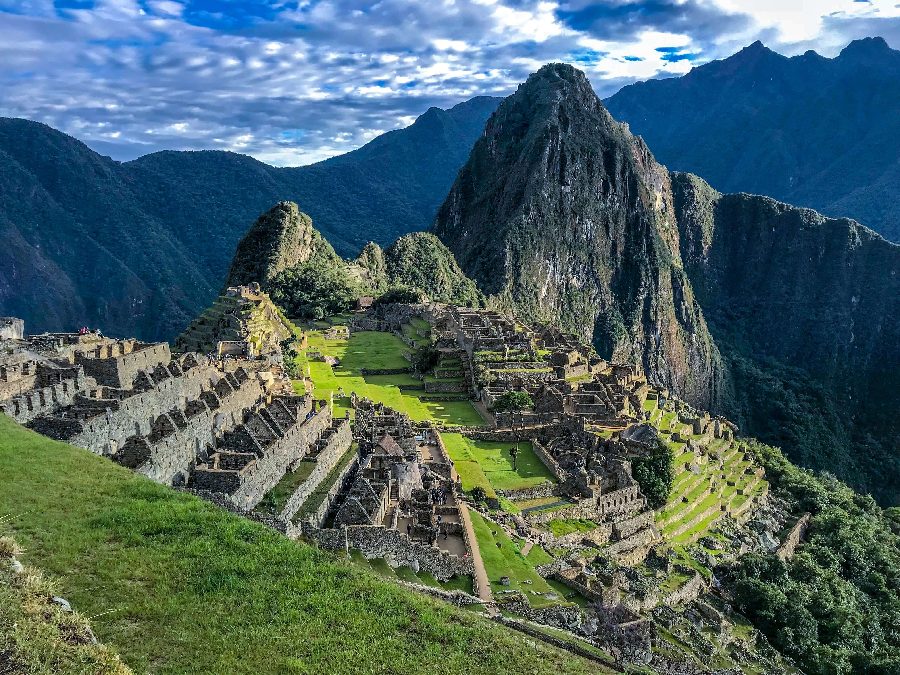

.jpg)
El Taj Mahal 'Corona de los palacios'; es un monumento funerario construido entre 1632 y 1654 en la ciudad de Agra,
estado de Uttar Pradesh (India), a orillas del río Yamuna, por el emperador musulmán Shah Jahan de la dinastía mogol.
El imponente conjunto de edificios se erigió en honor de su esposa favorita, Arjumand Banu Begum —más conocida como Mumtaz Mahal—
que murió en el parto de su decimocuarto hijo. Se estima que en su construcción trabajaron unos 20 000 obreros bajo dirección de
un conjunto de arquitectos liderados por el arquitecto de la corte, Ustad Ahmad.
El Taj Mahal es considerado el más bello ejemplo de palacio, estilo que combina elementos de las arquitecturas islámica y persa.
Este monumento ha logrado especial notoriedad por el carácter romántico de su inspiración.Aunque el mausoleo cubierto por la cúpula
de mármol blanco es la parte más conocida, el Taj Mahal es un conjunto amurallado de edificios que ocupa 17 hectáreas y que también incluye
una gran mezquita, una casa de invitados y jardines

Machu Picchu
es el nombre contemporáneo que se da a una llacta
—antiguo poblado incaico andino— construida antes del Siglo xv, ubicada en la Cordillera Oriental del sur del Perú,
en la cadena montañosa de
Los Andes a 2430 metros sobre el nivel del mar.Está ubicada en el departamento del Cusco (provincia de Urubamba, distrito de Machupicchu)
sobre el Valle Sagrado de los Incas, a 80 kilómetros al noroeste de la ciudad del Cusco, ciudad del Perú y por donde fluye el río Urubamba,
río que atraviesa la cordillera y origina un cañón con clima de montaña tropical. Según muchos estudios su nombre original habría sido Lladaqata.
Según documentos de mediados del siglo xvi, tenía un carácter privado.Sin embargo, algunas de sus mejores construcciones y el evidente carácter
ceremonial de la principal vía de acceso a la llaqta dan cuenta de su origen anterior a Pachacútec y a su presumible utilización como santuario
religioso.Ambos usos, el de palacio y el de santuario, no habrían sido incompatibles. Aun cuando se discute su supuesto carácter militar, por
lo que los populares calificativos de «fortaleza» o «ciudadela» podrían haber sido superados